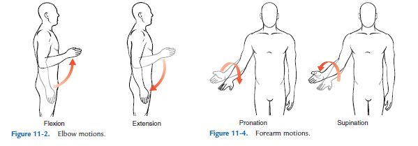
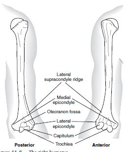

1.Joint structure(관절구조)
2.Bone and Landmark(뼈의 랜드마크)
3.Ligament and Other strutures
4.Muscle of the Elebow and Forearm
1.Joint structure(관절구조)
팔꿈치 관절은 3개의 뼈, 3개의 인대, 두개의 관절, 그리고 하나의 캡슐로 구성되어 있다.
일반적으로 humerus와 ulna, radius의 articulation은 elbow joint(팔꿈치관절)이라고 불린다.
elbow joint는 uniaxial hinge joint로 flexion과 extenstion의 움직임만이 일어나는 관절이다.
elbow joint는 shoulder joint와는 다르게 active hyperextenstion이 일어나지 않는다.
왜냐하면 ulna의 olecranon process와 humerus의 olecranon fossa가 딱 맞게 결합 되기 떄문이다.
elbow joint motion은 Flexion, Extenstion, Pronation, Supination 이 있습니다.
Flexion은 손바닥이 몸통쪽으로 오는 것이고, Extenstion은 반대로 손바닥이 몸통에서 멀어지는 것 입니다.
Pronation은 손바닥이 정면을 보다가 손등이 정면을 보게 회전시키는 것이고,
Supination은 반대로 손등이 정면을 보다 손바닥이 정면을 보게 회전 시키는 것 입니다.

유튜브 영상으로 움직임을 확인해 볼게요
2.Bone and Landmark(뼈의 랜드마크)
elbow joint는 3개의 뼈로 구성이 되어 있습니다.
humerus, ulna, radius 이 3개의 뼈의 랜드마크를 하나씩 알아 보도록 하겠습니다.
humerus는 알통이 있는 쪽에 있는 뼈 입니다. 팔꿈치쪽(distal)의 humerus는 elbow function의 중요한 랜드마크 들이 있습니다.
Trochlea, Capitulum, Medial Epicondyle, Lateral Epicondyle, Lateral Supracondylar Ridge, Olecranon Fossa.  오른쪽 humerus
radius는 ulna와 평행하게 이어진 바깥쪽의 뼈 입니다. 3개의 elbow function의 중요한 랜드마크 들이 있습니다.
Head, Radial Tuberosity, Styloid Process
3.Ligament and Other structure
조금뒤에
4.MUSCLE
Elbow와 Forearm의 muscle들을 살펴 보겠습니다.
Brachialis Brachioradialis Biceps Supinator Triceps Anconeus Pronator teres Pronator quadratus
가 있고 하나씩 살펴 보겠습니다.
Brachialis
Brachalis란 이름은 위치에서 왔습니다 라틴어로 "arm"을 의미합니다.
brachilis는 radius에 붙지 않습니다. 이 때문에 pronation과 supination에서의 역할이 없습니다.
brachilis는 매우 강한 elbow flexor입니다. 그래서 별명은 "workhorse of the elbow joint"입니다.